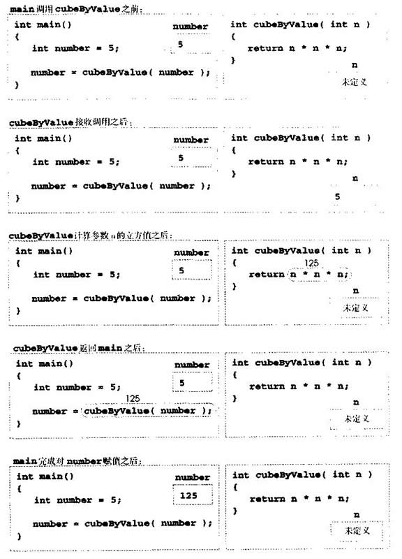
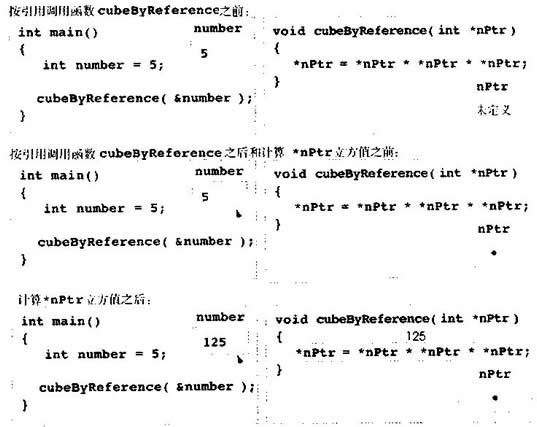

C++用三种方式向函数传递数值：按值调用(call-by-value)、用引用参数按引用调用(call-by-reference reference argument)和用指针参数按引用调用(call-by-reference pointer argument)。第3章比较了按引用调用与按值调用，本章主要介绍用指针参数按引用调用。
第3章曾介绍过，return可以从被调用函数向调用者返回一个值(或不返回值而从被调用函数返回控制)。我们还介绍了用引用参数将参数传递给函数，使函数可以修改参数的原有值(这样可以从函数“返回”多个值)，或将大的数据对象传递给函数而避免按值调用传递对象的开销(即复制对象所需的开销)。指针和引用一样，也可以修改调用者的一个或几个变量，或将大的数据对象指针传递给函数而避免按值调用传递对象的开销。
在C++中，程序员可以用指针和间接运算符模拟按引用调用(就像C语言程序中的按引用调用一样)。调用函数并要修改参数时，传递该参数地址，通常在要修改数值的变量名前面加上地址运算符( &)。第4章曾介绍过，数组不能用地址运算符(&)传递，因为数组名是内存中数组的开始位置(数组名等同于&arrayName[0])，即数组名已经是个指针。向函数传递参数地址时，可以在函数中使用间接运算符形成变量名的同义词、别名或浑名，并可用其修改调用者内存中该地址的值(如果变量不用const声明)。
图5．6和5．7的程序是计算整数立方函数的两个版本cubeByValue和cubeByReference。图5．6按值调用将变量number传递给函数cubeByValue。函数cubeByValue求出参数的立方，并将新值用return语句返回main，井在main中将新值赋给number。可以先检查函数调用的结果再修改变量值。例如，在这个程序中，可以将cubeByValue的结果存放在另一变量中，检查其数值，然后再将新值赋给number。
// Fig. 5,6: fig0506,cpp
// Cube a variable using call-by-value
#include < iostream.h>
int cubeByValue( int ); // prototype
int main()
{
int number = 5;
cout << "The original value of number is "<< number;
number = cubeByValue( number );
cout << "\nThe new value of number is" << number << endl;
return 0;
}
int cubeByValue( int n )
{
return n * n * n; // cube local variable n
}
输出结果:
The original value of number is 5
The new value of number is 125图5．6 按值调用求出参数的立方
图5．7的程序按引用调用传递变量nunber(传递number的地址)到函数cubeByReference。函
数cubeByReference取nPtr(int的指针)作为参数。函数复引用指针并求出nPtr所指值的立方，从
而改变main中的number值。图5．8和5．9分别分析了图5．6和1．7所示程序。// Fig. 5.7: fig05_07.cpp
// Cube a variable using call-by-reference
// with a pointer argument
#include < iostream.h>
void cubeByReference( int* ); // prototype
int main()
{
int number = 5;
cout << "The original value of number is "<< number;
cubeByReference( &number );
cout << "\nThe new value of number is "<< number << endl;
return O;
}
void cubeByReference( int *nPtr )
{
*nPtr = *nPtr = *nptr * *nptr; // cube number in main
}
输出结果：
The original value of number is 5
The new value of number is 125图 5．7 用指针参数按引用调用求出参数的立方
要复引用指针以取得指针所指的值时不复引用指针是个错误。
接收地址参数的函数要定义接收地址的指针参数。例如，cubeByReference的函数首部如下所示：
void cubeByReference(int *nPtr)
这个函数首部指定函数cubeByReferenee接收整型变量的地址(即整型指针)作为参数，在nPtr中局部存放地址，不返回值。
cubeByReference的函数原型包含括号中的int*。和其他变量类型一样，不需要在函数原型中包括指针名。参数名仅用于程序中的说明，编译器将
其忽略。
在需要单下标数组参数的函数首部和函数原型中，可以用cubeByReference参数表中的指针符号。编译器并不区分接收指针的函数和接收单下标数组的函数。当然，函数必须“知道”何时接收数组或要进行按引用调用的单个变量。编译器遇到形如int b[]的单下标数组函数参数时，编译器将参数变为指针符号int* const b(b是指向整数的常量指针)，const见第51节介绍。声明函数参数为单下标数组的两种形式可以互换。

图5．8典型的按值调用分析

图 5.9典型的用指针参数按引用调用分析